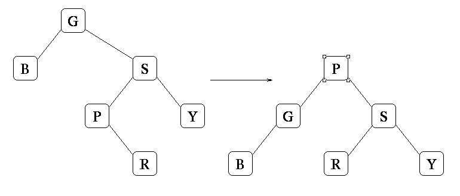
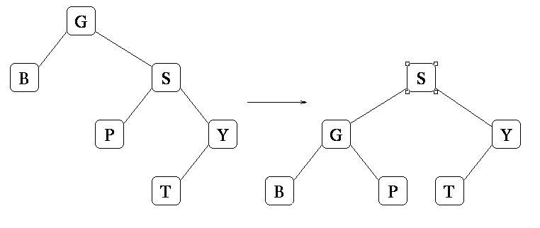
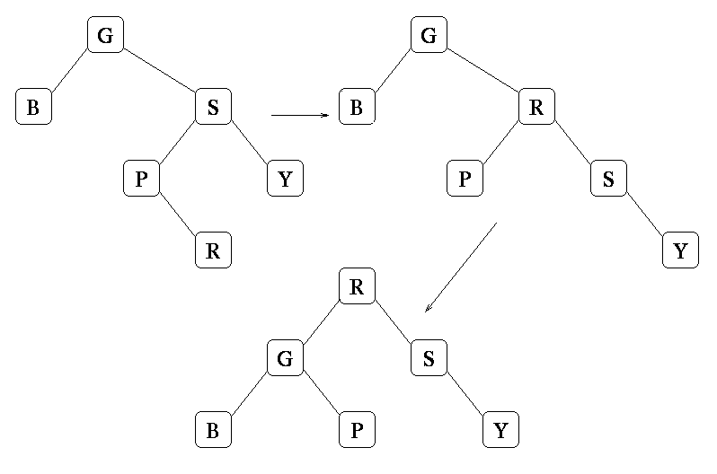
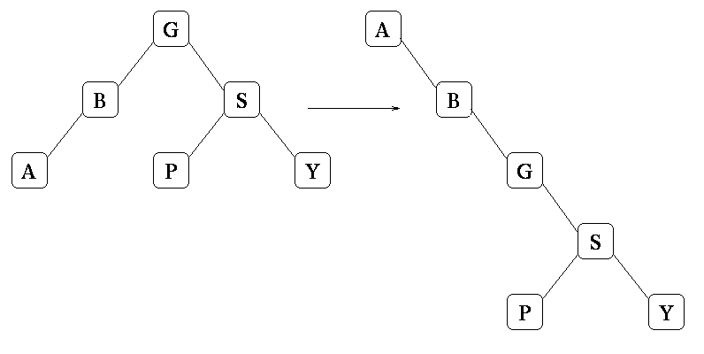

Start with -20. Then add 5 for the first ``total++.'' Then add 5*2 for the second one. The total is -5. Run the code yourself (add some print statements) if you're confused.
You got 2 points for answering -5. One point for -8.
-20 + (n+1) + (n+1)log(n) = n*log(n) + n + log(n) - 19
You got 4 points for answering n*log(n) + n + log(n) - 19 or its equivalent. You got 3 points for n*log(n) + n - 20, 2 points if you gave something that was Theta(n*log(n)), and one point if youf answer had a log(n) in it.
| . | g(n) = 1 | g(n) = log(n) | g(n) = n | g(n) = n*log(n) | g(n) = n*n |
| f(n) = O(g(n)) | . | . | . | X | X |
| f(n) = Omega(g(n)) | X | X | X | X | . |
| f(n) = Theta(g(n)) | . | . | . | X | . |
| f(n) = o(g(n)) | . | . | . | . | X |
Grading here went as follows. You got four points total for big-O terms, two points for the Omega terms, two points for the Theta term, one point for little-o. You were penalized for marking incorrect boxes.
You were graded relative to the answer you put down in Question 2. Thus, if you put down something where the dominant term is n*n, then your answer should have been:
| . | g(n) = 1 | g(n) = log(n) | g(n) = n | g(n) = n*log(n) | g(n) = n*n |
| f(n) = O(g(n)) | . | . | . | . | X |
| f(n) = Omega(g(n)) | X | X | X | X | X |
| f(n) = Theta(g(n)) | . | . | . | . | X |
| f(n) = o(g(n)) | . | . | . | . | . |
If your answer to question two had a dominant term that is linear, then your answer should have been:
| . | g(n) = 1 | g(n) = log(n) | g(n) = n | g(n) = n*log(n) | g(n) = n*n |
| f(n) = O(g(n)) | . | . | X | X | X |
| f(n) = Omega(g(n)) | X | X | X | . | . |
| f(n) = Theta(g(n)) | . | . | X | . | . |
| f(n) = o(g(n)) | . | . | . | X | X |
If your answer to question two had a dominant term that is log(n), then your answer should have been:
| . | g(n) = 1 | g(n) = log(n) | g(n) = n | g(n) = n*log(n) | g(n) = n*n |
| f(n) = O(g(n)) | . | X | X | X | X |
| f(n) = Omega(g(n)) | X | X | . | . | . |
| f(n) = Theta(g(n)) | . | X | . | . | . |
| f(n) = o(g(n)) | . | . | X | X | X |
And finally, if your answer to question two had a dominant term that is constant, then your answer should have been:
| . | g(n) = 1 | g(n) = log(n) | g(n) = n | g(n) = n*log(n) | g(n) = n*n |
| f(n) = O(g(n)) | X | X | X | X | X |
| f(n) = Omega(g(n)) | X | . | . | . | . |
| f(n) = Theta(g(n)) | X | . | . | . | . |
| f(n) = o(g(n)) | . | X | X | X | X |
Grading: 2 points for getting it right.

Grading: 4 points for getting it right. 2 points if you had a valid AVL tree (with all the right elements). Zero otherwise.

Grading: 4 points for getting it right. 2 points if you had a valid AVL tree (with all the right elements). Zero otherwise.

Grading: 4 points for getting it right. 2 points for a valid tree with R at the root.

Grading: 4 points for getting it right. 2 points for a valid tree with A at the root.
No partial credit.
No partial credit.
The correct answers are b, d, e and g. The only really tricky one is g. Think about it.
Grading was as follows: 2 points for each right answer. -2 for each wrong answer. Minimum score was zero.
The ordering of calls is:
visit(X)
visit(R)
visit(M)
visit(G)
print(G)
visit(P)
print(P)
print(M)
visit(V)
visit(U)
visit(T)
print(T)
print(U)
visit(W)
print(W)
print(V)
print(R)
print(X)
This makes:
G P M T U W V R XYou got 4 points for that. 2 points for a reverse postorder traversal (WTUVPGMRX). Otherwise, you got a point if the last thing printed was X.
int nnodes(BstreeNode *b) {
if (b == NULL) return 0;
return 1 + nnodes(b->left) + nnodes(b->right);
}
8 points for something that works, like the above. 6 points if
you forget to test for NULL. 2 points for something recursive.
0 otherwise.
#include < stdio.h >
#include "dllist.h"
Stack new_stack()
{
return (Stack) new_dllist();
}
free_stack(Stack s)
{
free_dllist((Dllist) s);
}
int stack_empty(Stack s)
{
return dll_empty((Dllist) s);
{
stack_push(Stack s, Jval val)
{
dll_prepend((Dllist) s, val)
}
Jval stack_pop(Stack s)
{
Jval retval;
retval = stack_top(s);
dll_delete_node(dll_first((Dllist) s));
return retval;
}
Jval stack_top(Stack s)
{
if (stack_empty(s)) {
fprintf(stderr, "Error: trying to look at the top of an empty stack\n");
exit(1);
}
return (dll_val(dll_first((Dllist) s)));
}
Point allocation was as follows: